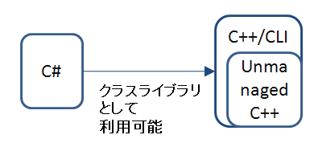
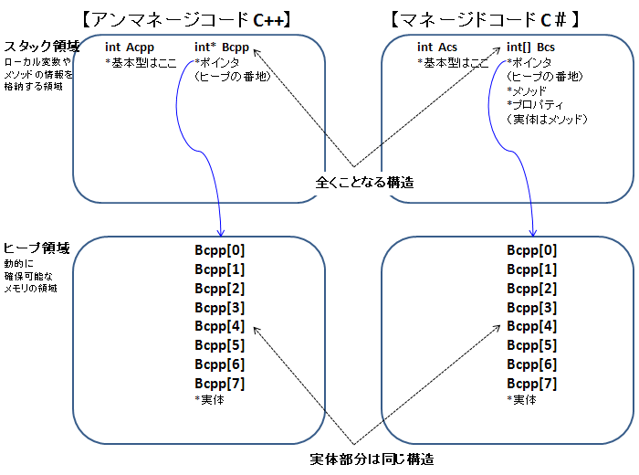
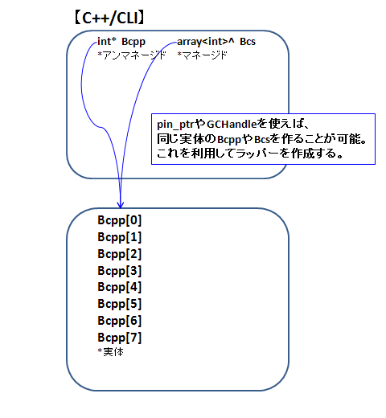

C#は、GUIの作成や.NET Frameworkを利用したプログラミングにおいて、便利な言語です。しかし、処理速度の面でC++に劣ります。
C#からC++の関数を実行することで、この処理速度におけるデメリットを補うことができます。
などがあります。ここでは後者を試してみます。
C++/CLIでラッピングする方法は、C++の基本型（プリミティブ型）だけでなくクラスや構造体（※2）も、C#で利用することができます。（DllImport属性では、C++のクラスをやりとりすることは出来ません）
やり方としては、C++/CLIのマネージ拡張機能を使って、C#とC++の橋渡し（マーシャリング※3）を行います。マネージ拡張機能とは、同じモジュール内でアンマネージ・コード（※4）とマネージ・コードを混在させることを可能にする機能です。
C#からC++を利用するのを前提として話を進めます。
C++/CLIは、先ほども述べたように同じモジュール内でアンマネージ・コードとマネージ・コードを混在させることが可能です。
C#側からは、クラスライブラリとして利用することができます。

しかしここで問題があります。C#（マネージ・コード）の変数とC++（アンマネージ・コード）の変数は、メモリへの配置が基本型以外異なっており、単純にC#からC++に渡すことができません。

そこで基本型以外の変数については、C++/CLIにおいて、「値をコピーする」もしくは「ポインタを駆使する」などの型変換なども同時に行う必要があります。
うまくC++/CLIの橋渡しができれば、通常の関数を使うようにC++の関数を、C#側から使うことが可能になります。
ヒープ領域の実体部分の構造が同じ変数なら、pin_ptrやGCHandleを利用して、ポインタを抽出してマーシャリングが可能になります。ポインタは、ヒープ領域に確保されたメモリの先頭アドレスです。
「値をコピーする」処理は遅いので、できるだけ「ポインタを駆使する」処理を利用してラッパーを作成します。

※1
C++/CLIの概要説明は以下を読んでください。
http://ja.wikipedia.org/wiki/C%2B%2B/CLI
"C++マネージ拡張"と比較して易しいような表現がされていますが、、、
※2
基本型のみで構成される構造体は、比較的簡単に受け渡しできます。
配列やポインタなどがメンバにあると難しくなります。
※3
異なる2つのシステム間で、データを交換できるようにデータを操作する処理。
上記では、C++/CLIのクラスライブラリで利用していますが、C#のクラスライブラリを利用しなければ実現できない場合もあります。
配列を要素に持つ構造体をマーシャリングするには、C#のクラスライブラリで定義する必要があります。
http://social.msdn.microsoft.com/Forums/ja/vcgeneralja/thread/26516067-fb42-4939-9aeb-bcf6d62e68da
※4
マネージ・コード（managed code）とは：
.NET Frameworkにおける共通言語基盤（CLI）に準拠した仮想機械上で実行される命令（コード）のこと。
これに対してマネージコード以外のコードはアンマネージ・コード（unmanaged code）やネイティブ・コード （native code）と呼ばれる。